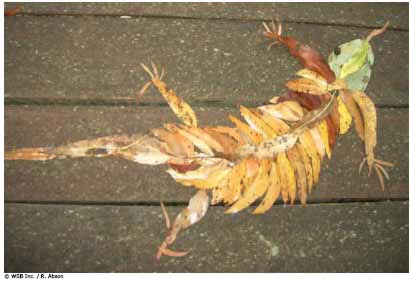

|
Arte Natural |
<<
Volver |

| Finalidad 2 Los Scouts trabajan por un mundo en el que existen hábitat naturales suficientes para mantener a las especies locales. Objetivos Educativos: Explorar un área natural local. Comprender las conexiones en el ecosistema, de las especies locales de plantas y animales; y sus necesidades de hábitat. Ser consientes de los problemas de conservación global que afectan a la biodiversidad. Rango de edades: Tropa Resumen: Una actividad al aire libre donde los Scouts tienen la oportunidad de ser creativos en la naturaleza y con la naturaleza. |
|
| Objetivo: Obtener una apreciación de
la variedad, forma y belleza de la naturaleza a través de actividades
creativas. Materiales: Papel y lápices Preparación: Encontrar un lugar adecuado para visitar. Duración: Una hora Localización: Un área natural local, por ejemplo, bosque, playa, montaña o parque. Fundamentos: El mundo natural está lleno de variedad y belleza. Una manera para crear conciencia sobre ello y empezar a comprenderlo y apreciarlo es a través del arte. Ser creativo en la naturaleza y con la naturaleza es una manera divertida de observar, conectarse y trabajar con el mundo natural. |
|
| Guía paso a
paso de la actividad 1. Encontrar un área natural local adecuada para llevar al grupo. 2. Pedir a cada Scout encontrar un espacio cómodo en el ambiente natural y pasar algunos minutos mirando alrededor de ellos en la naturaleza local. 3. Reunir al grupo y hablar sobre lo que observaron en los alrededores. 4. Pedir a cada Scout elegir una cosa en el ambiente y elaborar un dibujo de ello. Entregarles papel y lápices. Una vez que hayan terminado, mostrarán su dibujo al resto del grupo. 5. Pedir a los Scouts formar grupos pequeños (de entre tres y cinco). Usarán los objetos naturales que los rodean para crear una expresión artística – como un dibujo o una escultura. Asegurarse de que respeten los objetos naturales y que no dañen a algún ser viviente. Pueden usar hojas, ramas, piedras, tierral, árboles, arbustos, etc. Si lo desea, puede darles un tema para su trabajo artístico. 6. Una vez hayan terminado, reunir al grupo entero y realizar una galería del trabajo artístico. Cada grupo debería explicar su trabajo. |
|
| Evaluación 1. Descubrir lo que los Scouts aprendieron sobre el ambiente natural que visitaron. ¿Qué animales y plantas vieron? ¿Descubrieron cosas en el ambiente natural que no habían visto antes? ¿Cómo trabajan en conjunto los diferentes elementos naturales para crear el ambiente? Discutir cómo trabaja el ecosistema. 2. Descubrir cuánto disfrutan los Scouts al estar en el ambiente natural. ¿La actividad les ayudó a conectarse con la naturaleza? Actividades avanzadas 1. Llevar a cabo una investigación adecuada de ambiente natural local. Usar técnicas de inspección para registrar las plantas y vida salvaje, hacer moldes de yeso de huellas, recolectar desechos animales entre otras cosas, para construir una imagen de las criaturas viven ahí. 2. Animar a los Scouts a mantener sus propios diarios de naturaleza en los que puedan registrar sus observaciones con los diferentes sentidos. 3. Aprender sobre las especies propias y foráneas de su área local. ¿Causan las especies foráneas algún problema a las especies locales? Descubrir cómo fueron introducidas las especies foráneas. © World
Scout Bureau Rue du Pré-Jérôme 5 PO Box 91 1211 Geneva 4 Plainpalais Switzerland Tel.: (+ 41 22) 705 10 10 Fax: (+ 41 22) 705 10 20 worldbureau@scout.org scout.org Reproduction is authorized to National Scout Organizations and Associations which are members of the World Organization of the Scout | |